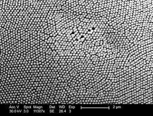

Taxonomia
- Reino: Animalia
- Filo: Crustacea
- Classe: Malacostraca
- Subclasse: Hoplocarida
- Ordem: Stomatopoda
- Família: Odontodactylidae
- Género: Odontodactylus
- Espécie: Odontodactylus scyllarus
Os olhos dos Stomatopoda , assim como o de outros crustáceos e insetos, é formado por várias subunidades denominadas omatídeos. Esse sistema de olho composto permite uma detecção rápida de movimento, importante, principalmente, para a fuga desses animais. Além disso, no caso de alguns crustáceos que habitam o fundo dos oceanos, como os Stomatopoda , esses olhos possuem um sistema para captar melhor a luz em ambientes com pouca luz. Outro aspecto importante desses olhos são a alta quantidade de fotorreceptores. São de 12 a 16 tipos de células que provavelmente tornam a visão das cores nesses animais bem diferente dos demais
Os estomatópodes formam uma ordem de animais com diversas peculiaridades interessantes. Uma das principais é o seu poderoso soco que, devido a sua alta velocidade, é considerado um dos "golpes" mais fortes entre os animais. Seus socos podem chegar à 80 km/h e são usados para abater as presas.